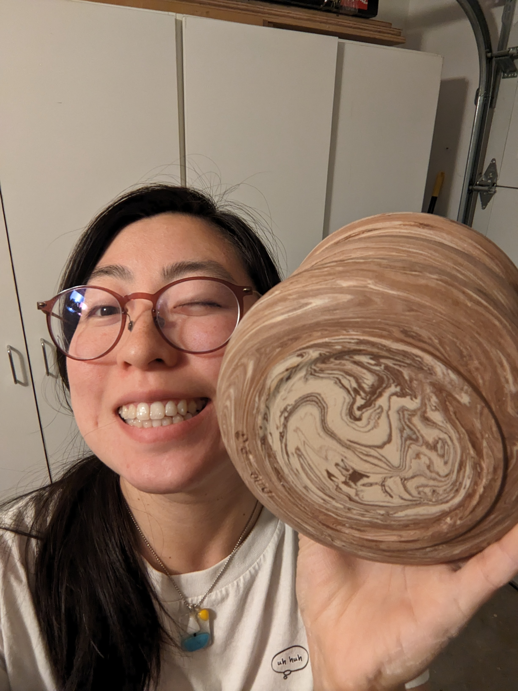
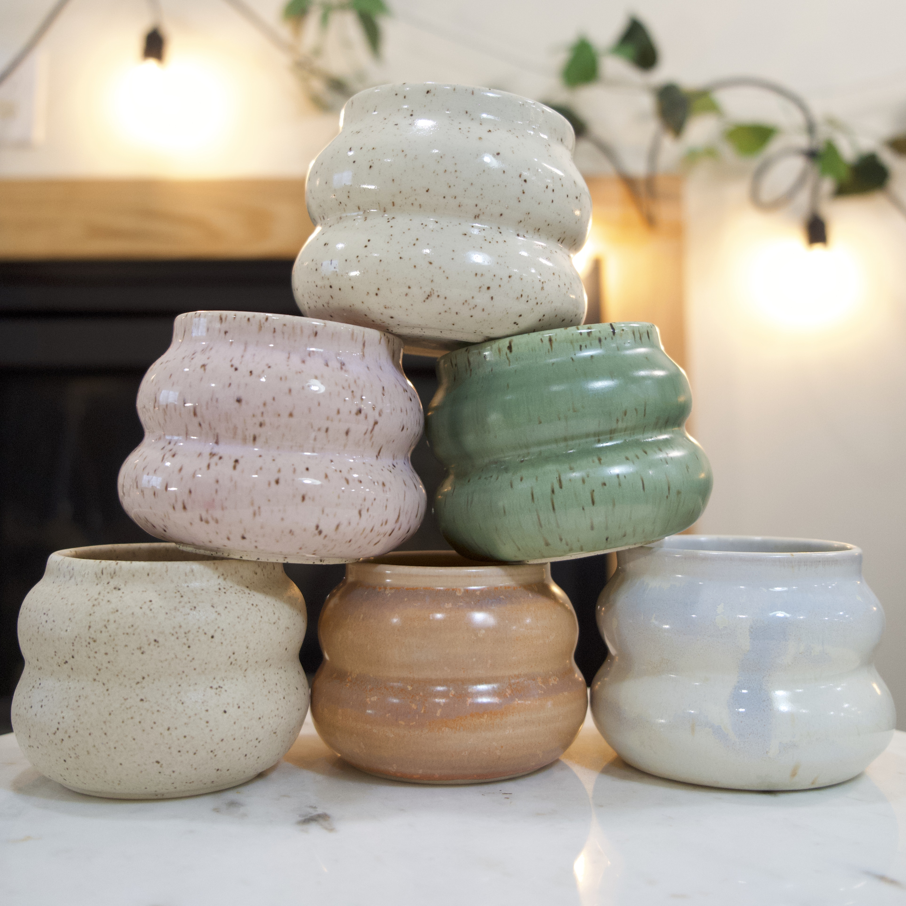
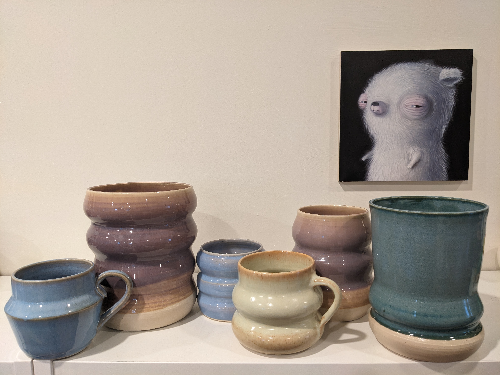

About
Mudslap ceramics is run by Diamond Wheeler, a local San Mateo county ceramic artist. Diamond was first introduced to clay in high school and found herself teaching on a campus studio in college. She has been working with clay for over 10 years and has taught classes for all ages and skill levels. Diamond is passionate about sharing her love of ceramics with others and helping them discover their own creativity through clay.


